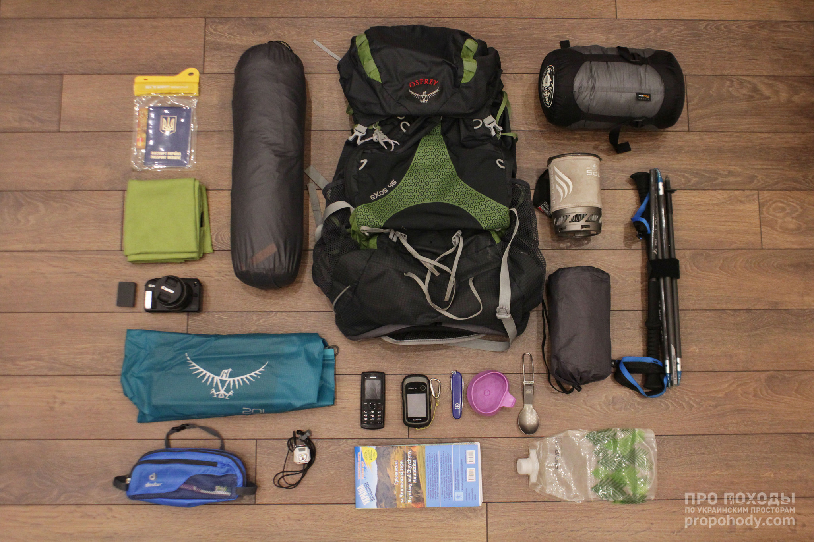

Туристичне спорядження
Туристичне спорядження — предмети і матеріали, які використовуються під час туристичного походу. Спорядження має бути легким, міцним, надійним та зручним. Відповідати кліматичним умовам, тривалості, меті та складності походу. Від того, як буде екіпірований турист, залежить його здоров'я та успішність походу.

Туристичне спорядження
Отже, що я раджу взяти в похід Карпатами або схожим гірським районом в теплу пору року:
Намет. Я пробував різні види укриттів, та намет, все ж таки, виявився найкращим з точки зору комфорту та простоти експлуатації. Верхня межа ваги – 1 кг на місце. Тобто двомісний намет вагою 2 кг – це максимум. Краще – легше. Від намету слід лишити вдома всі зайві кілочки та відтяжки. З ремкомплекту взяти лише патрубок для ремонту дуг.
Спальник-кокон. Бажано з пухом, що не боїться вологи. Потрібного температурного режиму, а не зимовий з аргументацією «про всяк випадок».
Спальник-кокон. Бажано з пухом, що не боїться вологи. Потрібного температурного режиму, а не зимовий з аргументацією «про всяк випадок». Компресійник для спальника потрібен, якщо важливо зменшити об’єм спальника до мінімума. Якщо ж в рюкзаку достатньо місця, спальником можна заповнювати порожнини між габаритними речами. Тоді компресійник не потрібен.
Килимок. Надувний, звісно:) Чохол для килимка.
Рюкзак. Його варто обирати в останню чергу, коли вже видно, що він має вмістити.
Накидка від дощу на рюкзак (рейнкавер). Добре захистить не тільки від опадів, але й від бруду в транспорті або смоли в жерепі.
Інтегрована система для приготування їжі (Jetboil, MSR Windboiler). Економніша, компактніша, швидша і суттєво зручніша за окремі казанок і пальник. Натомість трохи важча, ніж може бути окремі казанок з пальником. Їсти готові страви можна одразу з системи. В ній вони довше залишатимуться теплими завдяки ізоляційному чохлу. Або ж заливати сублімати і їсти їх з пакетів.
Газ для системи. Без захисного пластикового ковпачка. Запальничка. Лише в тому випадку, якщо інтегрована система не має п’єзопідпалу.
Ложка. Горнятко. Ємність для води
Ніж з вбудованими ножицями.
Ліхтарик.
Трекінгові палиці. Дуже і дуже бажано. Якщо ви до цього не ходили з палицями, будете вражені їхнім впливом на комфорт пересування і економію сил.
Паперова карта. За наявності – ламінована. Аби бачити загальну картину, визначити назви вершин навколо та краще запам’ятати район подорожі.
Мобільний телефон. Простіший – кращий. Фотокамера, запасні акумулятори та карти пам’яті. Бездзеркальна камера – чудовий вибір для походів. Компактна, легка, з широкими можливостями і змінною оптикою. Якщо збираєтесь в якості камери використовувати смартфон, потурбуйтесь про додатковий акумулятор для його зарядки. Сонцезахисні окуляри. Якісні, аби яскраве світло та ультрафіолет не завдали шкоди очам.
Гігієна: зубна щітка, пробник зубної пасти, готельна пляшечка шампуню, туалетний папір, сонцезахисний крем в пробнику, люстерко.
Посвідчення особи. Банківська картка. Трохи готівки. Водонепроникний чохол для документів, грошей і телефона.
З одягу, з весни по осінь, беру в гори наступний комплект незалежно від тривалості походу:
Термобілизна з тонкої вовни мериноса – 1 комплект
Тонка флісова кофта або тонкий пуховий светр – 1 шт.
Штани з флісу або товстої вовни – 1 шт.
Мембранна куртка – 1 шт.
Трекінгові штани, які швидко сохнуть – 1 шт.
Легкі шорти – 1шт.
Футболка з вовни мериноса – 1 шт.
Шкарпетки теплі (товста вовна) – 1 пара
Шкарпетки трекінгові (тонка вовна) 1-2 пари
Шапка або вовняна пов’язка – 1 шт
Легкі рукавиці – 1 пара
Спідня білизна
Взуття – 1 пара